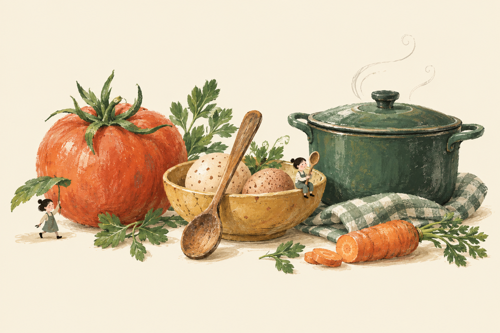
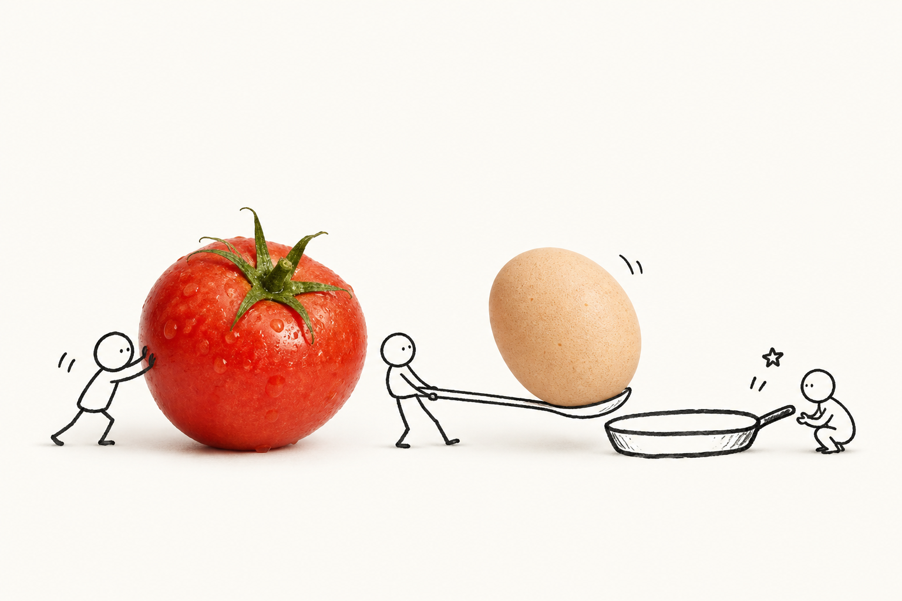

之前的方向水粉绘本

温暖、细腻，重在绘画质感。小人物较弱，物件主要用于陈列。
保留奶油色与绿色，让食物更真实，让小人更随性。
有趣来自它们在做什么。

温暖、细腻，重在绘画质感。小人物较弱，物件主要用于陈列。

食物保留真实肌理，小人通过推、搬、等候形成一个小故事。
线条保留顿挫和不规则，减少细腻服装、发丝与复杂面部。
把层次放在食物肌理、黑白线条与少量色彩的对照中。
收起过多胶带、印章和厚重叠纸，把视线留给一个好场景。
把袋子搬进来，点一下头。插画在录入完成时出现，库存列表保持名字＋数量。
围着同一口锅准备晚饭。选菜时勺子轻晃，完整菜单和用量填写区保持稳定。
确认成功后，小人举一下勺子。待购买、库存不足与错误仍使用明确文字和处理入口。
插画用短促的停顿与动作表达趣味；导航、输入和弹窗继续保持平稳。系统减少动态效果开启时，保留静态插画。
调整插画和装饰层，保留已明确的功能入口、紧凑库存、核对引导与真实 API 边界。